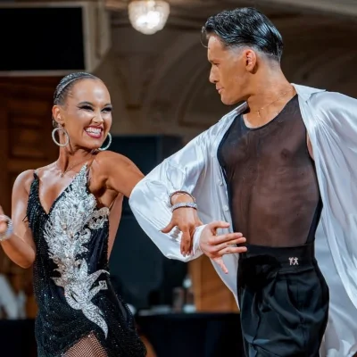
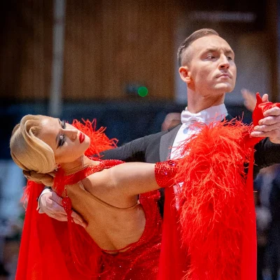

UTSC Forum Wien
Du möchtest dein Tanzen weiterentwickeln? Haltung, Technik und Führung lernen? Bei Wettkämpfen und Turnieren mitmachen? Dann bist du bei uns im UTSC Forum Wien richtig!
Komm vorbei! Gruppentraining für Hobbytänzer und Turnieranfänger – jeden Dienstag von 19:00 bis 20:30 Uhr. Du kannst zwei Mal kostenlos schnuppern!
Unsere Gruppentrainings
Hobbytanzen
Gruppentraining Standard
Gruppentraining Mixed
Unser Angebot
Tanzen als Hobbysport/Breitensport
Das Training richtet sich an alle Tanzsportbegeisterten, die ihr tänzerisches Können erweitern möchten.
- jeden Dienstag, von 19:00 bis 20:30 Uhr (ausgenommen Schulferien)
- wöchentlich abwechselnd Standard und Latein
- für Tanzschulpaare ab Gold-Kurs
- dient als Basis für Breitensport bzw. Einzeltraining zum Turniertanz
- alle zehn Tänze – mit jeweils einer eigenen Choreographie
- geleitete Übungsstunden am Freitag zur Wiederholung der im Gruppentraining erarbeiteten Choreographien
Für Fortgeschrittene
Betreuung durch nationale und internationale Spitzentrainer
- Privatstunden bei nationalen und internationalen Spitzentrainern
- Startberechtigung bei Tanzturnieren im In- und Ausland
- ständige Trainingshilfe
- Durchführung von Turnieren
- Rückhalt in Österreichs größtem Dachverband, der Sportunion
Dancing 4 Kids
Bewegung, Musik und jede Menge Tanzspaß!
- Hast du Spaß an Bewegung zur Musik?
- Möchtest du andere mit deinen Moves beeindrucken?
- Komm vorbei zum Schnuppertraining! Die ersten beiden Stunden sind gratis!
Informiere dich zu aktuellen Kindertrainings:
Jetzt informieren2klimatisierte Säle
300 m²Schwebeparkett
Unsere Trainer:innen
Ingrid Fussek
Clubtrainerin Latein
WDSF Wertungsrichterin (A-Lizenz)
Präsidentin des UTSC Forum Wien
Ludwig Wieshofer
Clubtrainer Standard
WDSF Wertungsrichter (A-Lizenz)
1. Vizepräsident des ÖTSV
Turnierwart
Gustavs Ernests Aräjs
Trainer Latein
Wertungsrichter
Vladimir Slon
Trainer Standard & Latein
Wertungsrichter

Natascha Welzel
Trainerin Standard

Wolfgang Stamm
Trainer Latein
Wertungsrichter

Magdalena Trepa & Kacper Kopec
Übungsleiter Latein & Standard

Arina Molochnikova & Tim Grabenwöger
Instruktoren Latein & Standard
Folge uns auf Instagram & bleib up to date:
Anfahrt & Kontakt
Kontakt
UTSC Forum WienMariahilfer-Strasse 115, im Hof
1060 Wien
Telefon: +43 664 210 31 61
E-Mail: cu@forumwien.at Kostenlos schnuppern